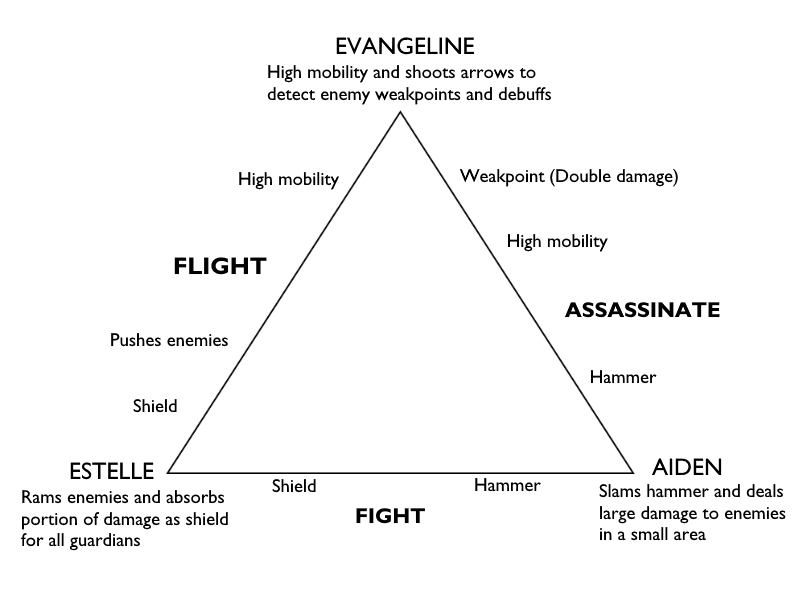
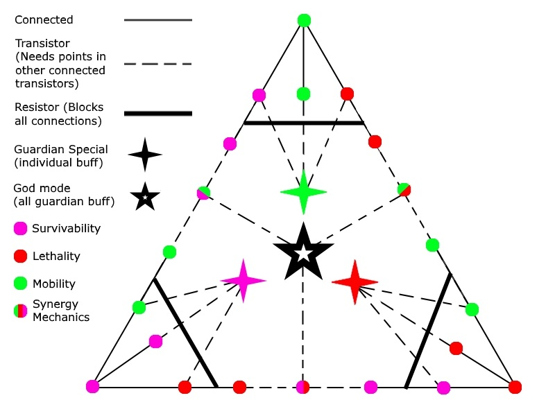

Engine: Unity
Responsibilities: Full Development
“Prophecy’s Chosen” is a 2D dungeon crawler game I am currently developing where players are alternating between 3 characters while developing synergies between them to fight monsters and solve puzzles.
Technically speaking, it's a game where the player controlled object is updating local variables such as mass, speed, color, etc. from a Guardian class. Each Guardian's abilities are inherited, thus, allowing the player to essentially BE that Guardian, which changes attack patterns and interactions depending on the chosen Guardian.
As of now, I've achieved the following:
WASD - Movement
SPACE - Jump
Mouse Left Button - Special attack
1 - Switch to Estelle
2 - Switch to Aiden
3 - Switch to Evangeline
All guardians are balanced according to their strengths in survivability, lethality and mobility.
Estelle is a gentle, motherly figure whose motivation to protect the prophecy's chosen comes from her will to preserve all creations of God. When inheriting Estelle's powers, the child is able to ram enemies and activate defense mode which absorbs damage from an enemy into a decaying shield and explodes on impact. This deals enough damage to shove enemies away in a large radius, but not enough to kill. The shield persists and explodes even when switching Guardians, allowing her to provide survivability to Aiden and Evangeline that lack it.
As the guardian of survivability, Estelle is designed with defensive mechanics with limited offensive and mobile potential.
Aiden is a brutish warrior who adopts a more primal approach to obstacles by smashing them with his hammer. To inherit the raw strength of his awesome Hammer of Wrath means to not only send enemies flying, but also himself, making it useful for climbing towering structures. Should enemies dare to stand in the way of the prophecy, they are to first make it past Aiden's divine judgement.
Aiden is designed to follow the conventional desire in action games to kill and destroy. Low survivability and mobility became an appropriate counter-balance as a drawback to his reckless playstyle.
Evangeline is God's journalist, an adventurer who finds solace in discovering relics, new monsters, and finding treasures. She takes advantage of her agility, double-jump and night vision to make up for her low survivability. She is equipped with a non-lethal bow and arrow, which lights pathes and detects enemy weaknesses and curses. Attacking exposed weak points will deal insane damage, which works incredibly well with Aiden's Hammer.
Evangeline is more of a support and excels at providing critical knowledge of incoming threats that Estelle or Aiden would not be aware of. Her strength is not only mobility but also knowledge.
"Curses" are debuffs that individual Guardians can be inflicted with when taking damage from enemies. They can be blocked by Estelle's shield or sometimes temporarily nullified by switching to another guardian (unless LOCKED or SWITCHED). Different debuffs can stack from multiple enemies and consistent damage can reset a debuff's timer if hit by the same debuff.
Enemies are created from a single block prefab with a movement and collision script.
The movement script takes an "aggression level" that sets an enemy's likeliness to chase and look for the player. while the collision script gives me access to debuffs, speed, knock-up, and damage. Tinkering with these variables allows me to easily create a diverse cast of enemies and even my first boss, Maralith, which can be seen at the end of the prototype video above.
Maralith is a powerful, six-armed demon inspired from the one in Dungeons and Dragon. Its arms are composed of five larger enemies, each equipped with one of five debuffs and a sixth being an invisible weak spot that only Evangeline can see. To kill the boss, the player must destroy all five "arms" before destroying the body. In the beginning, Maralith will simply creep towards the player, but as each arm gets destroyed, the arms will spin faster and increment her aggression level.
Building Maralith was the simple task of writing one script and parenting prefabs together. Out of more than 50 playtesters, only 2 have been able to defeat it. Only players that harnessed all three elements have defeated it.
Diagram framing some possible synergies
TL;DR: Players enjoyed the game, but felt the Guardians needed to be more independent. I am currently revamping the Guardian's mechanics and abilities.
There was a very interesting comprehension of the game's mechanics based on how experienced a player was in gaming. Non-gamers overall praised the game's functionality, quality, endearing mechanics, and tag-team concept, but expressed difficulty understanding the goals and controls of the game without my support. The gamers had no problem understanding the controls at all and were actually inventing new ways to deepen each guardian's mechanics. For example, the knock-up from Aiden's hammer was never intended to be used as a mobility mechanic to climb walls, yet players were accidentally depending on it. They criticized, however, the needless complexity of the tag-team mechanic and that the game will actually feel deeper had each character not been restricted to their design.
One that still burns to my memory leading this discussion was where one playtester felt that the extra step of having to switch to each guardian was not rewarding. I didn't believe this reasoning at first as I had specifically designed each guardian to fill in where another couldn't, but it started to make sense the more I observed playtesters duke it out against Maralith. The difficulty curve was a primary selling point in the showcase and I accurately predicted that most players could not defeat Maralith. What I failed to realize, however, is how these players were losing. Though there were a handful of players that weren't making use of synergies to its full effect, some of the players that did but still failed felt no reason to replay the game as they have already learned every capability the game has to offer. In essence, the depth of the game plateaued once players exhausted their freedom.
Switching guardians was a learning process at first but immediately flipped to becoming a chore, exhibiting a now blatant flaw in the game's design. I wish I had focused less on the game's functionality and focused more on the game's replayability. The guardians being designed to depend on each other made incapable for players to build a relationship with just one of them. Players had no reason to min-max Evangeline because Aiden is more effective at hitting weak spots, Why switch to Aiden when there are no enemies in front of him? Why would players want to continue using Estelle's slam if it's best used to gain shield health to protect the other two? I've realized the prophecy isn't worth these extra steps and can definitely be improved to engage characters without it feeling so troublesome.
For my game to truly reach this final form, I am working to revamp Estelle, Aiden, and Evangeline's mechanics to ones that realizes their individual strengths. I am currently devising a combat system that allows players to choose between synergies or prioritizing one Guardian. Below is a rough "skill tree" underway I am testing.
To add points, players must complete varying objectives for each Guardian or complete levels. Objectives are based on each Guardian's playstyle and will offer a choice for players to go above-and-beyond to progress all Guardian synergies (more points required) or more casually and focus on a single one (plotting a star on each corner).
I hope to see how this turns out and will update accordingly. Additional feedback and criticisms is greatly appreciated and can be forward through my contacts tab above. Thank you for your time and cooperation reading this as I know it was a long read. However, I also feel that voiding my thought process and creative approach will allow me to redefine quality for the future.